Probabilistic Extensions of Multi-Basin LSTM Models
목차 (Table of Contents)
초록 (Abstract)
극한 홍수 예측에서 첨두 유량을 낮게 예측하면 경보와 대응이 늦어질 수 있다. 다중 유역 LSTM은 여러 유역의 수문 반응을 함께 학습할 수 있지만, 결정론적 출력만 사용할 경우 큰 홍수 첨두를 과소추정하는 경향이 남는다. 본 연구는 이러한 한계가 LSTM 기반망(backbone: 입력 시퀀스에서 특징을 추출하는 핵심 신경망 구조) 자체만의 문제가 아니라, 하나의 중앙예측값만 내는 출력 설계의 제약일 수 있다고 보았다.
이를 확인하기 위해 동일한 LSTM 기반망을 유지한 채, 출력 헤드(output head: 기반망에 연결되어 최종 예측값을 생성하는 출력 계층)만 결정론적 예측에서 q50/q90/q95/q99 분위수 출력으로 확장한 확률론적 다중 유역 LSTM을 구성하였다. Model 1은 결정론적 LSTM 기준 모델로, Model 2는 분위수 헤드를 가진 확률론적 확장 모델로 정의하였다. 두 모델은 고정 subset300 학습 조건에서 난수 시드(seed) 111/222/444를 쌍별로 비교하였고, 결과 분석은 확장 DRBC 관측 테스트 세트(85개 유역, 2014–2016 평가 기간)를 기본 평가 기준으로 사용하였다.
결과적으로 Model 2의 q50은 중앙 예측 성능을 유지하였다. 유역 중앙값 NSE는 Model 1의 −0.031에서 Model 2 q50의 0.225로 증가했으며(Δ = +0.149), RMSE와 MAE도 각각 −0.273, −0.197 개선되었다. 더 중요한 결과는 상위 분위수에서 나타났다. Q99 초과 사건(82개 유역, 926개 사건)에서 q99의 사건 첨두 과소추정 비율 α(수식 6)는 0.018까지 낮아졌고, Q99 임계값 재현율 δ(수식 8)는 0.583까지 높아졌다. NOAA/NWS 확인 홍수 부분집합(21개 유역, 65개 사건)에서도 같은 방향의 개선이 확인되었다.
그러나 이 개선은 비용 없이 얻어진 것이 아니다. q99는 q50보다 고유량 재현율을 약 8배 높였지만, 오경보율(FAR)도 약 23배 증가시켰다. 전 시간 경험적 단측 피복률 Coverage(τ)(수식 10)은 q99에서 0.787로 명목 피복률 0.99에 미치지 못했다. 따라서 본 연구의 분위수 출력은 보정된 99% 예측 구간이나 재현 주기 추정값이 아니라, 극한 첨두 과소추정을 줄이기 위한 상위 꼬리 결정 출력으로 해석해야 한다.
본 연구는 결정론적 LSTM의 극한 홍수 과소추정 문제가 일부는 출력 설계에서 비롯될 수 있음을 보이며, 동일한 기반망에 확률론적 분위수 헤드를 추가하는 것만으로도 홍수 첨두 보호 성능을 개선할 수 있음을 제시한다.
제 1장 서론
1.1 연구 배경
하천 유량 예측에서 평상시 유량을 잘 맞추는 것은 중요하지만, 실제 재난 대응과 홍수 경보에서는 드물게 발생하는 첨두유량을 놓치지 않는 것이 더 직접적인 안전 문제로 이어진다. 수문 예측 모델은 Nash-Sutcliffe Efficiency(NSE)와 같은 전체 기간 지표를 최적화하는 과정에서 자연스럽게 평상시 유량 조건에 더 많은 학습 용량을 할당하게 된다. 이 때문에 관측 빈도가 낮은 극한 홍수 사건에서는 모델이 첨두 크기를 낮게 예측하는 경향이 나타날 수 있다.
LSTM(Long Short-Term Memory) 기반 수문 예측 모델은 최근 여러 유역에 걸친 강우-유출(rainfall-runoff) 관계를 동시에 학습하는 다중 유역 구조로 발전하였으며, 전통적인 물리 기반 모델 수준 이상의 예측 성능을 보여왔다(Kratzert et al., 2018, 2019). 그러나 하나의 결정론적 출력값만 생성하는 구조에서는 드문 고유량 홍수 사건에서 첨두를 낮게 예측하는 경향이 여전히 남는다. 이는 학습 목적함수(모델이 최소화하려는 기준 함수, 여기서는 NSE 기반 오차)가 전체 시간의 전반적인 유량을 강하게 반영하는 반면, 극단값은 발생 빈도가 낮아 손실 함수에서 충분히 강조되지 않기 때문이다.
본 연구는 이 문제를 "LSTM을 더 복잡하게 만들 것인가"가 아니라 "같은 기반망의 출력을 어떻게 설계할 것인가"의 문제로 다룬다. 즉 결정론적 점 추정값 하나만 출력하는 대신, 같은 시점에서 중앙예측과 여러 수준의 상위 꼬리(upper-tail) 출력을 동시에 제공하면 극한 첨두 과소추정을 줄일 수 있는지 확인한다.
1.2 연구 목적과 가설
이를 위해 다음 가설을 검증한다.
- H1. Model 2의 q50은 Model 1 결정론적 출력과 비교 가능한 중앙 예측값으로 기능해야 한다. (→ RQ-1)
- H2. q90/q95/q99는 τ가 커질수록 첨두 과소추정을 줄이는 방향으로 작동해야 한다. (→ RQ-2)
- H3. 첨두 과소추정 감소에는 오탐지(false-positive) 또는 과대예측 비용이 동반되므로, 재현율만이 아니라 비용도 함께 평가해야 한다. (→ RQ-3)
- H4. q99는 재현 주기 홍수나 양방향 예측 구간이 아니라 단측 상위 꼬리 결정 출력으로 해석해야 한다. (→ RQ-5)
1.3 연구의 기여점
- 공정한 Model 1 vs Model 2 비교 구조: 기반망, 입력 변수, 유역 분할, 시간 분할, 난수 시드를 고정하고 출력 헤드와 손실 함수만 바꾸어 확률론적 헤드의 효과를 분리하였다.
- DRBC 지역 검증 보류 평가: DRBC 밖 유역에서 학습한 광역 다중 유역 모델을 DRBC 유역에서 평가하여, 공간 일반화(spatial generalization) 조건에서 첨두 과소추정을 분석하였다.
- 분위수 출력 해석 체계 제시: q50은 중앙 예측값, q90/q95/q99는 보수성 수준이 다른 상위 꼬리 결정 출력으로 구분하고, 보정 주장과 운영적 첨두 포착 주장을 분리하였다.
제 2장 이론적 배경
2.1 다중 유역 LSTM
LSTM(Long Short-Term Memory)은 경사 소실(vanishing gradient: 역전파 시 기울기 신호가 점점 작아져 깊은 층의 학습이 어려워지는 현상) 문제를 셀 상태(cell state)와 게이팅 메커니즘(gating mechanism)으로 극복한 순환 신경망(recurrent neural network)으로, 강수·기온·복사 등 동적 강제력(dynamic forcing)의 시간적 의존성을 효과적으로 학습한다. 수문 예측에서는 과거 강제력 시퀀스와 유역 정적 속성(static attributes)을 함께 사용해 유역별 강우-유출 반응을 예측한다.
다중 유역 LSTM은 수백 개의 유역 데이터를 하나의 모델에서 함께 학습함으로써, 데이터가 부족한 개별 유역에서도 다른 유역의 패턴을 활용한 일반화 성능을 얻을 수 있다(Kratzert et al., 2019). 본 연구의 두 모델은 모두 같은 CudaLSTM 기반망을 사용한다.
시각 \(t\)에서 LSTM 셀의 연산은 다음과 같이 정의된다.
\[ \begin{aligned} \mathbf{i}_t &= \sigma(\mathbf{W}_i\,[\mathbf{x}_t;\,\mathbf{h}_{t-1}] + \mathbf{b}_i) \\ \mathbf{f}_t &= \sigma(\mathbf{W}_f\,[\mathbf{x}_t;\,\mathbf{h}_{t-1}] + \mathbf{b}_f + b_0) \\ \mathbf{g}_t &= \tanh(\mathbf{W}_g\,[\mathbf{x}_t;\,\mathbf{h}_{t-1}] + \mathbf{b}_g) \\ \mathbf{o}_t &= \sigma(\mathbf{W}_o\,[\mathbf{x}_t;\,\mathbf{h}_{t-1}] + \mathbf{b}_o) \\ \mathbf{c}_t &= \mathbf{f}_t \odot \mathbf{c}_{t-1} + \mathbf{i}_t \odot \mathbf{g}_t \\ \mathbf{h}_t &= \mathbf{o}_t \odot \tanh(\mathbf{c}_t) \end{aligned} \tag{12} \]여기서 \(\mathbf{i}_t,\,\mathbf{f}_t,\,\mathbf{o}_t\)는 각각 입력·망각·출력 게이트, \(\mathbf{g}_t\)는 셀 입력 후보, \(\mathbf{c}_t\)는 셀 상태, \(\mathbf{h}_t \in \mathbb{R}^H\)는 은닉 상태(H = 128)이다. \(\sigma\)는 시그모이드, \(\odot\)은 원소별 곱셈, \(b_0 = 3\)은 초기 망각 편향(initial forget bias)으로 학습 초기 장기 의존성 보존을 돕는다.
입력 벡터 \(\mathbf{x}_t = [\mathbf{d}_t;\,\mathbf{s}]\)는 시각 \(t\)의 동적 강제력 \(\mathbf{d}_t \in \mathbb{R}^{11}\)과 유역 정적 속성 \(\mathbf{s} \in \mathbb{R}^8\)의 연결(concatenation)이다. 정적 속성은 모든 시간 스텝에 동일하게 복사되어 입력된다.
| 유형 | 변수 | 차원 |
|---|---|---|
| 동적 강제력 \(\mathbf{d}_t\) | Rainf (강수량), Tair (기온), PotEvap (잠재증발량), SWdown (단파복사), Qair (비습), PSurf (지표기압), Wind_E (동서풍), Wind_N (남북풍), LWdown (장파복사), CAPE (대기불안정 에너지), CRainf_frac (대류성 강수 비율) | 11 |
| 정적 속성 \(\mathbf{s}\) | area (면적), slope (경사), aridity (건조도), snow_fraction (적설 비율), soil_depth (토심), permeability (투수율), forest_fraction (산림 비율), baseflow_index (기저유출 지수) | 8 |
입력 시퀀스 길이는 336시간(14일)이며, 모델은 시퀀스의 마지막 24시간(predict_last_n = 24)에 대한 예측값을 출력한다. 학습·검증 시에는 이 마지막 24시간 예측에 대해서만 손실이 계산된다.
그림 1은 두 모델의 아키텍처를 비교한다. 두 모델은 동일한 다중 유역 CudaLSTM 기반망(은닉 크기 128, 참조 기간(lookback) 336시간)을 공유하며, 차이는 출력 헤드와 학습 목적함수뿐이다. Model 1은 회귀 헤드와 NSE 손실을, Model 2는 분위수 헤드와 Pinball 손실을 사용한다.
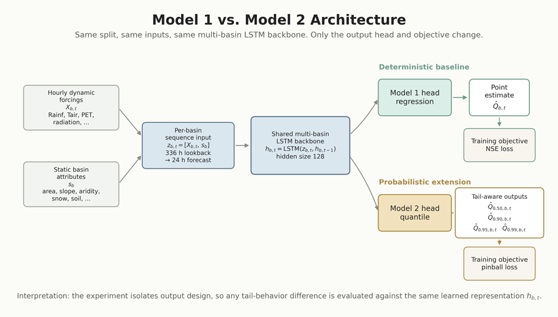
그림 2는 단일 시퀀스의 입출력 구조를 나타낸다. 동적 강제력과 유역 정적 속성을 336시간 참조 기간으로 입력받으며, 마지막 시점에서 Model 1은 단일 점 추정값을, Model 2는 q50/q90/q95/q99를 동시에 출력한다.
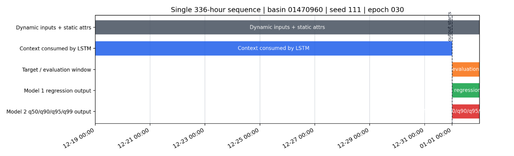
2.2 Model 1: 결정론적 기준 모델
Model 1은 매 시점 하나의 유량 값을 예측하는 결정론적 회귀 모델이다. 전체 수문곡선의 평균적 적합도를 잘 확보할 수 있지만, 드문 고유량 첨두에서는 조건부 평균 쪽으로 수축하면서 과소추정이 발생할 수 있다.
은닉 상태 \(\mathbf{h}_t\)에서 최종 유량 예측값은 선형 회귀 헤드로 계산된다.
\[ \hat{Q}_t = \max\!\bigl(0,\; \mathbf{w}_r^\top \mathbf{h}_t + b_r\bigr) \tag{13} \]여기서 \(\mathbf{w}_r \in \mathbb{R}^H\)와 \(b_r\)은 학습되는 회귀 헤드 파라미터이며, \(\max(0,\cdot)\)은 유량의 비음수 제약을 구현한다. Model 1의 학습 목적함수는 NSE 기반 정규화 제곱오차이다.
\[ \mathcal{L}_{\text{NSE}} = \frac{\displaystyle\sum_{t=1}^{T}(y_t - \hat{Q}_t)^2}{\displaystyle\sum_{t=1}^{T}(y_t - \bar{y})^2} \tag{14} \]이 손실을 최소화하는 것은 NSE(수식 3)를 최대화하는 것과 동치이다. 분모의 관측 분산이 정규화 항으로 작동하여 유역 간 유량 규모 차이를 완화한다.
→ 그림 1 (Model 1 vs. Model 2 아키텍처) 참조.
2.3 Model 2: 확률론적 분위수 확장
Model 2는 Model 1과 같은 기반망을 사용하되, 헤드만 분위수 출력으로 바꾼다. 출력 분위수 집합은 τ ∈ {0.50, 0.90, 0.95, 0.99}이다.
분위수 헤드는 동일한 은닉 상태 \(\mathbf{h}_t\)에서 4개 분위수를 동시에 출력하는 선형 층이다.
\[ \begin{bmatrix} \hat{Q}_{t,0.50} \\ \hat{Q}_{t,0.90} \\ \hat{Q}_{t,0.95} \\ \hat{Q}_{t,0.99} \end{bmatrix} = \max\!\bigl(0,\; \mathbf{W}_q\,\mathbf{h}_t + \mathbf{b}_q\bigr) \tag{15} \]여기서 \(\mathbf{W}_q \in \mathbb{R}^{4 \times H}\)와 \(\mathbf{b}_q \in \mathbb{R}^4\)는 분위수 헤드의 학습 파라미터이다. 4개 분위수에 균등 가중치(각 1.0)를 부여하여 Pinball 손실(수식 1–2)을 합산한다. 분위수 교차(crossing) 페널티는 현재 설계에 포함하지 않았다.
→ 그림 1 (Model 1 vs. Model 2 아키텍처) 참조.
q50은 조건부 중앙값(입력 조건 하에서 유량의 50번째 백분위 추정값)으로, Model 1 결정론적 출력과 가장 직접적으로 비교되는 중앙 예측값이다. q90/q95/q99는 하위 분위수가 없는 단측 상위 꼬리 출력(하나의 상한선만 제공하며 양방향 불확실성 구간을 구성하지 않는 단방향 출력)이다. 따라서 본 연구에서는 이를 예측 구간이나 재현 주기 추정값으로 해석하지 않는다. 특히 q99는 100년 빈도 홍수가 아니라, 해당 시점 조건에서 모델이 내는 가장 보수적인 상위 꼬리 결정 출력이다.
2.4 분위수 손실 함수 (Pinball Loss)
Model 2는 분위수별 Pinball 손실(Koenker & Bassett, 1978)을 사용하여 학습한다. 시각 \(t\)에서 관측 유량을 \(y_t\), 분위수 \(\tau\)에 대한 예측값을 \(\hat{y}_{t,\tau}\)라 할 때, 단일 시각의 Pinball 손실은 다음과 같이 정의된다.
\[ L_\tau(y_t,\, \hat{y}_{t,\tau}) = \begin{cases} \tau\,(y_t - \hat{y}_{t,\tau}) & \text{if } y_t \geq \hat{y}_{t,\tau} \\[4pt] (1-\tau)\,(\hat{y}_{t,\tau} - y_t) & \text{if } y_t < \hat{y}_{t,\tau} \end{cases} \tag{1} \]분위수 집합 \(\mathcal{T} = \{0.50,\, 0.90,\, 0.95,\, 0.99\}\)에 대한 전체 학습 손실은 각 분위수의 손실을 균등 평균하여 정의한다.
\[ \mathcal{L}_{\text{pinball}} = \frac{1}{|\mathcal{T}|\,T} \sum_{\tau \in \mathcal{T}} \sum_{t=1}^{T} L_\tau(y_t,\, \hat{y}_{t,\tau}) \tag{2} \]여기서 \(T\)는 학습 기간의 전체 시간스텝 수이다. \(\tau\)가 클수록 관측값이 예측값보다 큰 경우(과소예측: 모델이 실제보다 낮게 예측한 상태)에 더 큰 패널티가 부과된다. 이러한 비대칭 구조로 상위 분위수(q90, q95, q99)는 첨두 과소추정을 줄이는 방향으로 학습한다. 반면 Model 1은 표준 NSE 기반 평균제곱오차 손실을 사용한다.
2.5 평가 지표
본 연구는 전체 수문곡선 성능과 홍수 첨두 특화 성능을 분리하여 평가한다. 이하에서 공통 기호를 먼저 정의한다.
- \(y_t\) : 시각 \(t\)에서의 관측 유량 [m³/s]
- \(\hat{y}_t\) : 시각 \(t\)에서의 점 추정 예측값 (Model 1 단일 출력, 또는 Model 2 q50)
- \(\hat{y}_{t,\tau}\) : 시각 \(t\)에서 분위수 \(\tau\)의 예측값 (Model 2)
- \(\bar{y}\) : 평가 기간 관측 유량의 시간 평균
- \(T\) : 평가 기간 전체 시간스텝 수
- \(\mathbf{1}[\cdot]\) : 조건이 참이면 1, 거짓이면 0을 반환하는 지시 함수
2.5.1 전체 성능 지표
결정론적 예측(Model 1 및 Model 2의 q50)의 전반적 수문곡선 적합도를 평가하기 위해 수문학 분야에서 널리 사용되는 지표들을 활용한다.
Nash-Sutcliffe Efficiency (NSE) (Nash & Sutcliffe, 1970)
전체 수문곡선 형태의 적합도를 평가한다. 1에 가까울수록 완벽한 예측이며, 0은 관측 평균값으로 예측한 것과 동등한 성능, 음수는 그보다 나쁜 경우를 의미한다.
\[ \text{NSE} = 1 - \frac{\displaystyle\sum_{t=1}^{T}(y_t - \hat{y}_t)^2}{\displaystyle\sum_{t=1}^{T}(y_t - \bar{y})^2} \tag{3} \]Kling-Gupta Efficiency (KGE) (Kling et al., 2012)
상관관계, 변동성 편향, 평균 편향을 동시에 분해하여 종합 평가한다. 1이 최적이며, NSE보다 고유량 조건에서 더 균형 잡힌 진단을 제공한다(Knoben et al., 2019).
\[ \text{KGE} = 1 - \sqrt{(r-1)^2 + \left(\frac{\sigma_{\hat{y}}}{\sigma_y}-1\right)^2 + \left(\frac{\mu_{\hat{y}}}{\mu_y}-1\right)^2} \tag{4} \]여기서 \(r\)은 관측값과 예측값 간의 피어슨 상관계수, \(\sigma_{\hat{y}}/\sigma_y\)는 표준편차비(변동성), \(\mu_{\hat{y}}/\mu_y\)는 평균비(편향)를 나타낸다.
평균 절대오차 (MAE) 및 평균 제곱근 오차 (RMSE)
\[ \text{MAE} = \frac{1}{T}\sum_{t=1}^{T}\left|y_t - \hat{y}_t\right|, \qquad \text{RMSE} = \sqrt{\frac{1}{T}\sum_{t=1}^{T}(y_t - \hat{y}_t)^2} \tag{5} \]두 지표 모두 단위는 m³/s이며, 0에 가까울수록 우수하다. RMSE는 이상값(극단 오차)에 민감하고 MAE는 선형적이므로, 두 지표를 함께 사용하면 오차 분포의 성격을 파악할 수 있다.
2.5.2 홍수 첨두 성능 지표
전체 기간 지표는 드물게 발생하는 극한 홍수 첨두에서의 성능을 충분히 반영하지 못한다. 본 연구는 Q99 초과 사건(event) 집합 \(E\)를 대상으로 다음 네 가지 첨두 특화 지표를 정의한다. \(Q_{99}^{(b)}\)는 유역 \(b\)의 관측 유량 99번째 백분위수이다.
첨두 과소추정 비율 \(\alpha\)
Q99 사건의 관측 첨두 시각에서 예측값이 얼마나 부족한지를 상대 비율로 측정한다. 0에 가까울수록 첨두를 잘 포착한 것이다.
\[ \alpha = \frac{1}{|E|}\sum_{e \in E} \frac{\max\!\left(0,\; y_e^{\text{peak}} - \hat{y}_{e,\tau}^{\text{peak}}\right)}{y_e^{\text{peak}}} \tag{6} \]여기서 \(y_e^{\text{peak}}\)는 사건 \(e\)에서의 관측 첨두유량, \(\hat{y}_{e,\tau}^{\text{peak}}\)는 분위수 \(\tau\)의 예측 첨두유량이다.
±6시간 창 포착률 \(\beta\)
관측 첨두 발생 시각 기준 ±6시간 창 안에서 예측값이 관측 첨두 크기에 도달하는지 여부를 평가한다. 1에 가까울수록 우수하다.
\[ \beta = \frac{1}{|E|}\sum_{e \in E} \mathbf{1}\!\left[\max_{|k|\,\leq\,6}\hat{y}_{t_e+k,\,\tau} \;\geq\; y_e^{\text{peak}}\right] \tag{7} \]여기서 \(t_e\)는 사건 \(e\)의 관측 첨두 발생 시각, \(k\)는 시간 오프셋(단위: 시간) 단위이다.
Q99 임계값 재현율 \(\delta\)
관측값이 유역별 Q99 임계값을 초과하는 모든 시간스텝 중, 예측값도 Q99를 초과하는 비율이다. 홍수 경보 관점에서 1에 가까울수록 우수하다.
\[ \delta = \frac{\#\!\left\{t:\; y_t > Q_{99}^{(b)} \;\wedge\; \hat{y}_{t,\tau} > Q_{99}^{(b)}\right\}} {\#\!\left\{t:\; y_t > Q_{99}^{(b)}\right\}} \tag{8} \]오경보율 FAR
예측이 Q99를 초과하였지만 실제 관측은 Q99 미만인 경우의 비율이다. 홍수 경보가 틀린 오경보의 비율을 나타내며, 0에 가까울수록 우수하다.
\[ \text{FAR} = \frac{\#\!\left\{t:\; y_t \leq Q_{99}^{(b)} \;\wedge\; \hat{y}_{t,\tau} > Q_{99}^{(b)}\right\}} {\#\!\left\{t:\; \hat{y}_{t,\tau} > Q_{99}^{(b)}\right\}} \tag{9} \]2.5.3 확률론적 보정 지표
Model 2가 출력하는 분위수 예측의 통계적 유효성은 경험적 피복률로 진단한다.
경험적 피복률
실제 관측값이 분위수 \(\tau\) 예측값 이하에 놓이는 비율이다. 이상적으로 보정(calibration: 예측 분위수의 통계적 신뢰도가 명목값과 일치하는 상태)된 모델이라면 Coverage(\(\tau\)) ≈ \(\tau\)가 성립한다.
\[ \text{Coverage}(\tau) = \frac{1}{T}\sum_{t=1}^{T}\mathbf{1}\!\left[y_t \leq \hat{y}_{t,\tau}\right] \tag{10} \]보정 오차 CE(\(\tau\))는 명목 피복률 \(\tau\)와 경험적 피복률의 차이로 정의한다.
\[ \text{CE}(\tau) = \left|\,\text{Coverage}(\tau) - \tau\,\right| \tag{11} \]\(\text{CE}(\tau) = 0\)이면 해당 분위수가 통계적으로 잘 보정되었음을 의미한다. 본 연구에서는 τ ∈ {0.90, 0.95, 0.99}에 대해 이 지표를 보고한다.
| 지표 | 수식 번호 | 최적값 | 평가 대상 |
|---|---|---|---|
| NSE | (3) | 1.0 | 전체 수문곡선 |
| KGE | (4) | 1.0 | 전체 수문곡선 |
| MAE / RMSE | (5) | 0 | 전체 수문곡선 |
| \(\alpha\) (첨두 과소추정 비율) | (6) | 0 | Q99 사건 첨두 |
| \(\beta\) (창 포착률) | (7) | 1.0 | Q99 사건 첨두 |
| \(\delta\) (Q99 재현율) | (8) | 1.0 | Q99 초과 시간스텝 |
| FAR | (9) | 0 | Q99 초과 시간스텝 |
| Coverage(\(\tau\)) | (10) | \(\tau\) | 전체 시간스텝 |
| CE(\(\tau\)) | (11) | 0 | 전체 시간스텝 |
2.6 모델 공통 하이퍼파라미터
두 모델은 출력 헤드와 손실 함수를 제외한 모든 하이퍼파라미터를 동일하게 설정하여, 관측된 성능 차이가 출력 설계에 의한 것임을 분리할 수 있도록 하였다.
| 항목 | 값 | 비고 |
|---|---|---|
| 은닉 크기 (hidden_size) | 128 | 단일 LSTM 층 |
| 참조 기간 (seq_length) | 336시간 (14일) | 시간 단위 입력 창 |
| 예측 대상 구간 (predict_last_n) | 24시간 | 마지막 24 스텝에 손실 계산 |
| 출력 드롭아웃 (output_dropout) | 0.3 | 헤드 직전 적용 |
| 초기 망각 편향 (initial_forget_bias) | 3 | 장기 의존성 초기화 |
| 옵티마이저 | Adam | — |
| 학습률 스케줄 | 1×10⁻³ → 5×10⁻⁴ → 1×10⁻⁴ | epoch 0 / 10 / 20에서 변경 |
| 배치 크기 (batch_size) | 256 | — |
| 총 학습 에폭 (epochs) | 30 | — |
| 경사 클리핑 (clip_gradient_norm) | 1 | — |
| 분위수 손실 가중치 (Model 2) | 균등 (각 1.0) | τ별 불균등 강조 없음 |
제 3장 데이터와 실험 방법
3.1 CAMELSH Hourly Dataset
본 연구는 CAMELSH(Catchment Attributes and MEteorology for Large-sample Studies — Hourly) 시간 단위 자료집합을 사용한다(Tran et al., 2025). 시간 단위 해상도는 일 단위 자료집합보다 빠른 홍수 응답과 첨두 발생 시각을 더 직접적으로 분석할 수 있는 장점이 있다.
동적 강제력에는 강수, 기온, 복사, 습도, 풍속 등 시간 단위 기상 변수를 사용하고, 정적 속성에는 면적, 경사, 건조도, 적설 비율, 토심, 투수율, 산림 비율, 기저유출 지수 등을 사용한다. 지연 관측 유량은 본 비교축에 포함하지 않았다. 이는 결정론적 기준 모델이 과도하게 강해져 확률론적 헤드의 순수 효과를 해석하기 어려워지는 것을 막기 위함이다.
3.2 DRBC Regional Holdout
Delaware River Basin Commission(DRBC) 경계는 본 연구의 지역 검증 보류 평가 구역이다. 모델은 DRBC 내부 유역을 학습하지 않고, DRBC 밖 유역에서 광역 다중 유역 모델로 학습된다. 따라서 본 실험은 Delaware 전용 지역 모델이 아니라, 다른 지역에서 학습된 다중 유역 표현이 DRBC에 공간 일반화되는지를 평가한다.
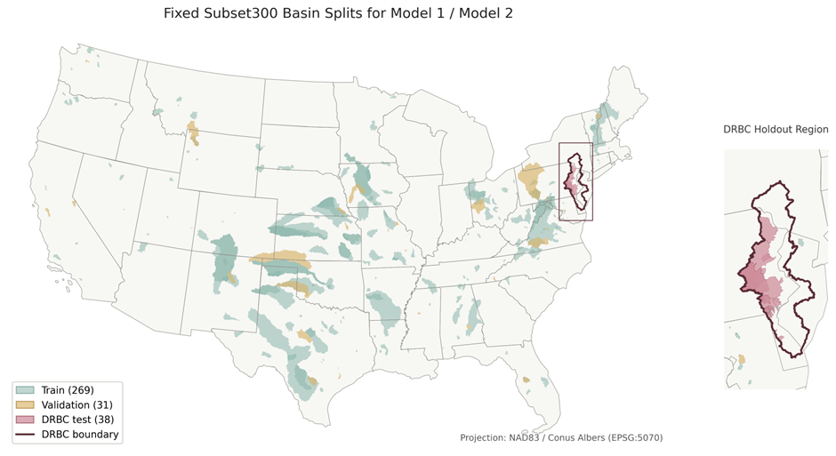
3.3 유역 분할과 Subset300 학습 설계
학습 풀(training pool)은 배출구가 DRBC 밖에 있고 DRBC 다각형 중첩 비율이 0.1 이하인 품질 기준 통과 비(非)DRBC 유역으로 구성하였다(outlet_in_drbc == False AND overlap_ratio ≤ 0.1, 품질 기준 통과 → 1,923개). 규모 파일럿 실험에서는 유역 수 100/300/600을 비교했고, 비DRBC 검증 성능, 정적 속성 분포, 관측 유량 사건 반응 진단, 동일 크기 임의 서브셋 기준선, 계산 비용을 함께 고려해 subset300을 채택하였다. 이 선택은 DRBC 테스트 지표를 보고 결정하지 않았다.
확장 DRBC 관측 테스트 분할은 품질 기준과 2014–2016 기간 포함 조건을 통과한 DRBC 85개 유역을 공식 평가 기준으로 사용한다. 기존 pre-expanded DRBC 보류 세트는 보관 비교 맥락으로만 둔다.
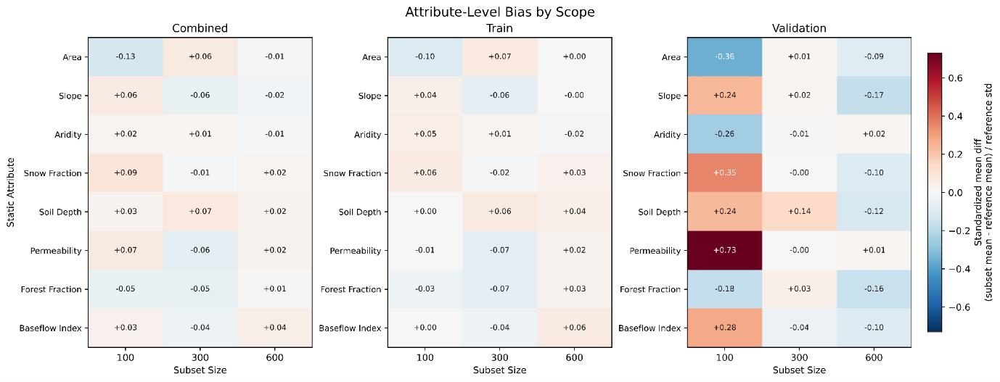
그림 4는 subset 크기와 분할 방식에 따른 정적 속성 편향을 나타낸다. Subset300(가운데 열)은 대부분 속성에서 |편향| < 0.1로, 전체 pool 대비 유역 특성 대표성이 양호하다. 반면 subset100은 일부 속성에서 편향이 더 크게 나타나 subset300이 학습 데이터 품질 측면에서 더 적합함을 확인할 수 있다.
3.4 시간 분할과 난수 시드 규약
| 구분 | 기간 | 역할 |
|---|---|---|
| Train | 2000-01-01 – 2010-12-31 | non-DRBC basin에서 모델 학습 |
| Validation | 2011-01-01 – 2013-12-31 | Checkpoint 선택 |
| 테스트 | 2014-01-01 – 2016-12-31 | DRBC 검증 보류 평가 |
Model 1과 Model 2는 쌍별(paired) 난수 시드 111/222/444를 사용한다. Model 2 시드 333은 NaN 손실로 중단되었으므로 최종 집계에서 제외하고, 공정한 쌍별 시드 비교를 위해 Model 1 시드 333도 제외하였다. 결과 집계는 유역×시드 단위로 지표를 계산하고, 시드 중앙값을 유역 안에서 취한 뒤, 유역 간 중앙값과 사분위 범위(IQR)를 보고하는 방식을 따랐다.
3.5 기본 체크포인트 선택
Model 1의 손실 함수는 NSE 계열이고 Model 2의 손실 함수는 Pinball 손실이므로, 원시 검증 손실을 모델 간 체크포인트 선택 기준으로 직접 비교할 수 없다. 따라서 기본 체크포인트는 비DRBC 검증 중앙값 NSE를 기준으로 선택하였다. DRBC 테스트 결과를 보고 체크포인트를 다시 고르지 않았다.
3.6 NOAA 확인 홍수 보조 검증 데이터
Q99 초과 사건 분석(RQ-2)의 외부 독립 검증을 위해 NOAA/NWS 확인 홍수 부분집합을 보조적으로 구성하였다. 이 부분집합은 두 출처를 결합하여 만들어지며, 해석 시 두 출처의 공간 단위 차이를 반드시 고려해야 한다.
3.6.1 데이터 출처
① NWS 홍수 단계 초과 이벤트. NWS(National Weather Service)가 각 USGS 관측소에 대해 지정한 minor flood stage(소규모 홍수 경보 기준 수위)를 실제 관측 유량이 초과한 구간을 CAMELSH 시계열에서 추출하였다. 초과 구간 내 독립 이벤트는 peak 간 72시간 분리 기준을 적용하여 확정하였다. 이 이벤트는 USGS gauge ID를 통해 유역과 직접 연결된다.
② NOAA Storm Events 보강 주석. NOAA NCEI(National Centers for Environmental Information) Storm Events Database에서 Flood·Flash Flood·Coastal Flood 유형 기록을 내려받아 NWS 이벤트에 보강 주석으로 활용하였다. 이벤트 peak 시각을 기준으로 설정한 시간 창(±EVENT_WINDOW_HOURS) 안에 Storm Events 기록이 존재하면 해당 이벤트를 NOAA-보강(corroborated)으로 표시하고 홍수 유형(Flash Flood / Flood / Coastal Flood)을 분류하였다.
3.6.2 NOAA-GAGES-II 공간 경계 불일치
주요 한계: NOAA Storm Events는 county(군·행정구역) 단위 공간 보고를 사용하는 반면, GAGES-II/CAMELSH 유역 경계는 수문학적 분수령(hydrological watershed)을 따른다. 행정구역과 유역 경계는 원칙적으로 일치하지 않으므로, 동일한 county에 복수의 유역이 포함되거나 하나의 유역이 복수의 county에 걸칠 수 있다. 따라서 NOAA 주석은 "해당 시기에 해당 county에서 공식 홍수 기록이 존재하였다"는 보강 근거이지, "해당 수문 유역의 gauge에서 NWS 기준이 초과되었다"는 직접 확인은 아니다.
3.6.3 결합 방법
NOAA 카탈로그의 USGS ID와 확장 DRBC 85개 유역 ID를 8자리 zero-padding으로 정규화한 뒤 교집합을 구하였다. NOAA 카탈로그에 포함된 49개 유역 중 46개(94%)가 확장 DRBC 85개 유역 목록과 일치하였다. 이 46개 교집합 유역 내에서 테스트 기간(2014–2016)에 속하는 NOAA-보강 이벤트를 대상으로 강제력 및 유량 관측 커버리지 조건(각 90% 이상)을 적용하여 최종 21개 유역 65개 이벤트로 구성된 독립 검증 부분집합을 확정하였다.
3.6.4 해석 지침
NOAA 확인 홍수 결과는 Q99 사건 분석(RQ-2)을 외부에서 보강하는 방향성 일관성(directional consistency) 검사로 해석한다. 공간 경계 불일치로 인해 이 부분집합을 DRBC 내 모든 official flood stage 초과 사건의 완전한 목록으로 취급하지 않으며, Q99 사건 범위의 결론이 외부 공식 기록 기반 극한 사건에서도 재현되는지 확인하는 보조 근거로 활용한다.
3.7 결과 분석 질문 (Research Questions)
| RQ | 대응 가설 | 질문 | 핵심 산출물 |
|---|---|---|---|
| RQ-1 | H1 | q50이 중앙 예측 성능을 유지하는가? | NSE, KGE, FHV, MAE, RMSE 쌍별 차이 |
| RQ-2 | H2 | 상위 분위수가 첨두 과소추정을 줄이는가? | α(과소추정 비율), β(창 포착률), δ(재현율) |
| RQ-3 | H3 | 그 대가로 오탐지 비용이 얼마나 생기는가? | FAR, 과대예측 크기 |
| RQ-4 | — | 유역/사건 유형에 따라 효과가 다른가? | Model 1 NSE 계층(tier), NOAA 사건 유형 |
| RQ-5 | H4 | 분위수 출력은 보정되고 예리한가? | 경험적 피복률, Pinball, 밴드 폭, 단조성 |
제 4장 실험 결과
4.1 RQ-1: q50 중앙 예측 성능
Model 2의 q50은 Model 1 대비 중앙 예측 성능을 유지하였다. 확장 DRBC 관측 테스트 85개 유역에서 유역 중앙값 기준 NSE는 Model 1 −0.031, Model 2 q50 0.225였고, 쌍별 차이(Δ)는 +0.149였다. RMSE와 MAE도 각각 −0.273, −0.197만큼 개선되었으며, KGE도 +0.041 증가하였다. 이는 Model 2 q50이 전반적인 수문곡선 형태를 더 균형 잡히고 정확하게 예측하고 있음을 의미하며, 확률론적 헤드로의 전환이 중앙 예측 성능을 저하시키지 않음을 보여준다.
| 지표 | Model 1 중앙값 | Model 2 q50 중앙값 | Δ (q50 − M1) | Δ IQR (Q25 / Q75) |
|---|---|---|---|---|
| NSE | −0.031 | 0.225 | +0.149 | −0.039 / +0.448 |
| KGE | 0.082 | 0.158 | +0.041 | −0.087 / +0.343 |
| Bias | −0.459 | −0.948 | −0.437 | −1.087 / +0.319 |
| MAE (cms) | 2.584 | 2.509 | −0.197 | −0.780 / +0.126 |
| RMSE (cms) | 4.850 | 4.393 | −0.273 | −1.140 / +0.246 |
| FHV (%) | −12.3 | −36.1 | −8.5 | −58.5 / +8.2 |
Model 1의 유역 중앙값 NSE가 −0.031로 음수인 점은 맥락이 필요하다. 확장 DRBC 유역은 학습 풀(비DRBC 유역)과 다른 수문 체제를 가질 수 있으며, 이는 분포 이동(distribution shift)으로 이어진다. DRBC 유역은 도시화, 인위적 유량 조절, 지하수 추출 등 비정상성(non-stationarity) 요인이 복합적으로 작용한다. 시드 111/222/444 세 반복에서 Model 1 유역별 NSE의 시드 중앙값 IQR은 [−0.889, +0.314]로 유역 간 이질성이 크며, 음수 NSE는 특정 시드가 아닌 전 시드에 공통으로 나타나는 구조적 특성이다. 두 모델이 같은 유역-시드 쌍에서 평가되므로, 음수 NSE 기준값은 상대 비교의 유효성에 영향을 주지 않는다.
편향(Bias)은 q50에서 더 음수 방향으로 나타났다(−0.459 → −0.948, Δ = −0.437). 이는 q50이 조건부 중앙값을 추정하는 분위수 산출값이고, 양의 비대칭(positively skewed) 유량 분포에서 평균 추종 결정론적 출력과 중앙값 추종 분위수 출력이 다르게 동작하기 때문이다. 유량 지속 곡선(FDC) 상위 2% 구간 부피 편향 지표인 FHV도 같은 방향을 지지한다. FHV는 Model 1에서 −12.3%, Model 2 q50에서 −36.1%로, q50이 고유량 구간에서 더 심한 과소 추정을 보였다(Δ = −8.5%). 이는 q50의 편향 악화가 전체 유량 구간이 아니라 고유량 구간에 집중됨을 시사하며, 상위 분위수를 통한 보완 필요성을 정당화한다.
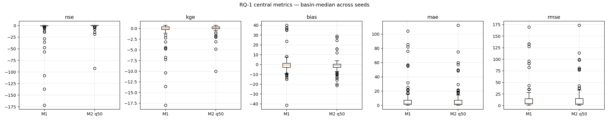
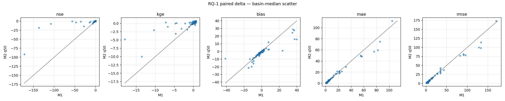
4.2 RQ-2: 상위 분위수의 첨두 과소추정 완화
Q99 초과 사건(유역별 학습 기간 관측 99 백분위 임계값 기준)에서, Model 2의 상위 분위수 산출값은 첨두 과소추정을 τ가 증가함에 따라 단조롭게 줄였다. 분석 대상은 82개 활성 유역의 926개 Q99 사건이었다.
사건 첨두 과소추정 비율 α(관측 첨두 대비 과소추정 비율, 수식 6)의 유역 중앙값은 q50 0.657에서 q99 0.018로 감소하였다. 이는 q99가 사건 첨두 시각에서 관측 첨두를 거의 따라잡는 수준까지 과소추정을 줄였다는 의미이다. 즉, τ가 높아질수록 모델이 극한 홍수 첨두를 더 잘 포착하게 된다. 다만 유역 간 IQR은 여전히 크며(IQR 0.000–0.283), 유역에 따른 효과 편차가 존재한다.
| 산출값 | α (첨두 과소추정 비율) | β (±6시간 창 포착률) | δ (Q99 재현율) |
|---|---|---|---|
| Model 1 | 0.588 | 0.519 | 0.143 |
| q50 | 0.657 | 0.444 | 0.069 |
| q90 | 0.376 | 0.733 | 0.280 |
| q95 | 0.272 | 0.920 | 0.379 |
| q99 | 0.018 | 1.306 | 0.583 |
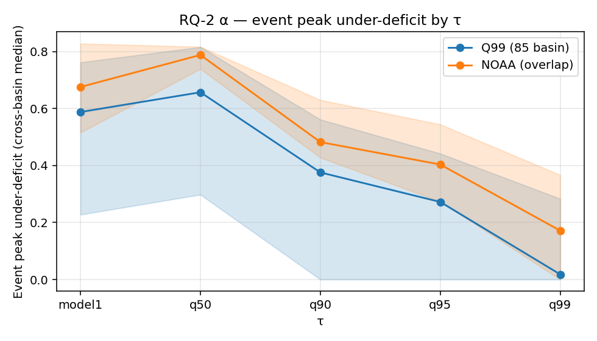
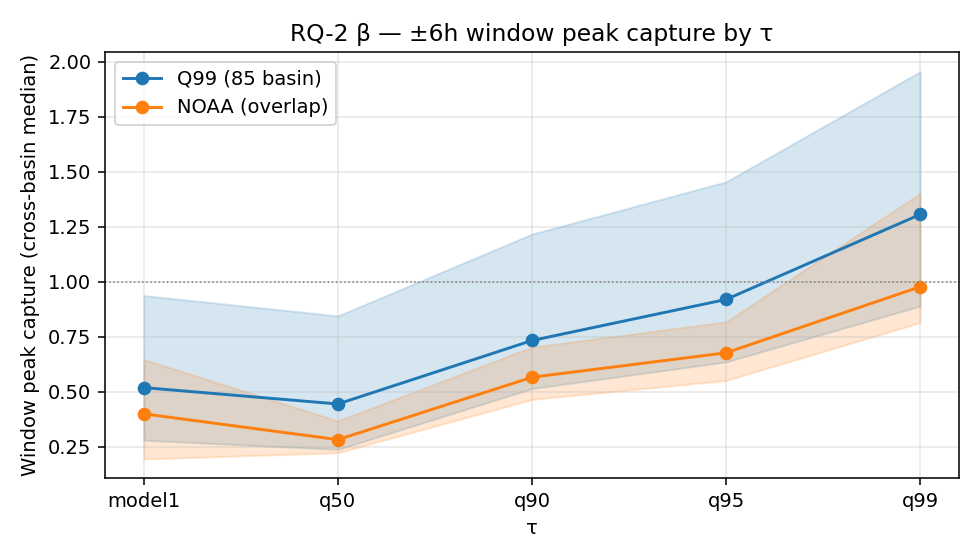
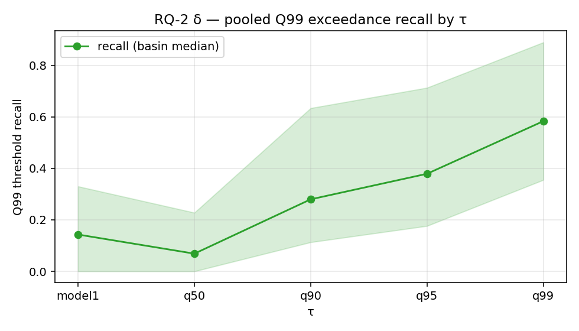
불확실성 밴드 관점의 재해석
전체 사건 집계(event-pooled) 기준으로 관측 유량의 불확실성 밴드 내 위치 분포를 분석하면, q50~q99 밴드 안에 들어오는 경우(q50–q90 + q90–q95 + q95–q99 구간 합산)는 약 45%였고, q99를 초과하는 경우는 약 43%였다. q50 미만으로 과대 추정된 경우는 약 11%였다. 실제 첨두 유량의 43%는 q99보다 높은 유량을 보였다. 이는 현재 분위수 출력 체계가 극한 홍수 첨두의 절반 가까이를 여전히 과소평가하고 있음을 의미하며, 보정 개선이나 추가 사후 처리의 필요성을 직접적으로 시사한다. (주: 클래스별 독립 중앙값은 단체(simplex) 제약을 깨므로 사건 집계 비율을 사용한다.)
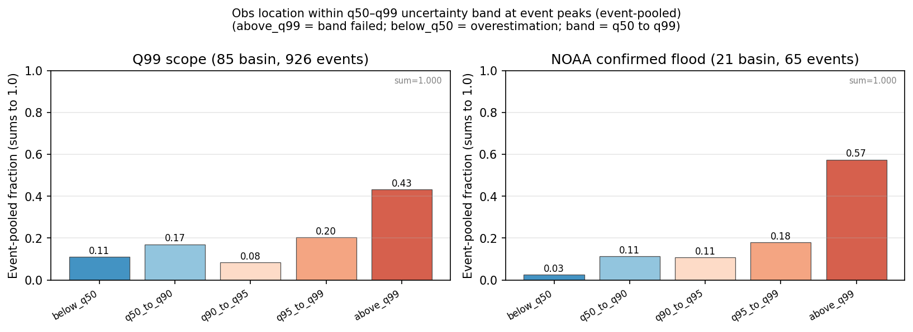
간격 궤적 (Gap Trajectory)
절대 과소 간격은 q50 23.7 cms → q90 13.0 cms → q95 8.7 cms → q99 0.87 cms로 단조 감소하였다. 반면 과대 간격은 q50~q95에서 0이다가 q99에서 처음으로 3.58 cms가 나타난다. τ를 q95에서 q99로 올리는 구간에서 과소 간격 감소(8.7 → 0.87 cms, 89.7% 감소)와 과대 간격 등장(0 → 3.58 cms)이 동시에 발생하는 상충 관계 구조를 보인다.
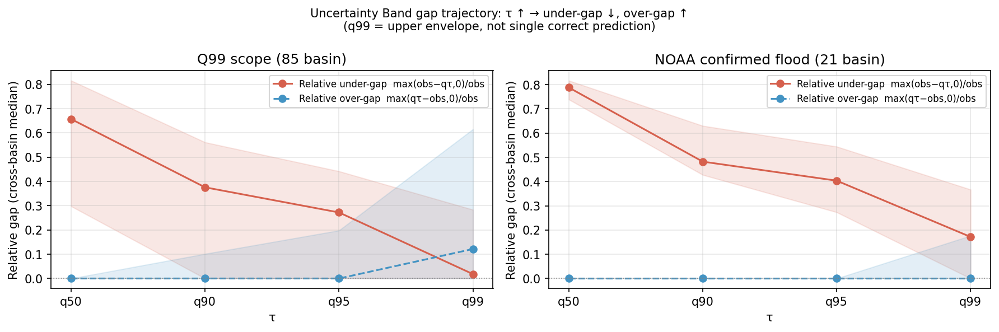
NOAA 확인 홍수 사건의 독립 검증
NOAA/NWS 확인 홍수 목록과 확장 DRBC 유역의 중첩은 21개 유역, 65개 사건이었다. NOAA 범위에서도 상위 분위수의 방향성은 Q99 범위와 일치하였다. q50의 α(수식 6)는 0.788이었고, q99에서 0.172로 감소(78.1% 감소)하였다. β(수식 7)는 q50 0.282에서 q99 0.977로 증가하였다. 이러한 결과는 NOAA가 공식적으로 확인한 실제 홍수 사건에서도 상위 분위수의 첨두 보호 효과가 일관되게 나타남을 독립적으로 뒷받침한다.
밴드 관점에서 NOAA 확인 홍수 사건은 더 극단적인 패턴을 보였다. 사건 첨두 시각에서 관측 유량이 q99를 초과하는 비율은 유역 간 중앙값 기준 1.0이었다 — 21개 유역 전부에서 관측 유량 첨두가 q99를 초과하였다. 모델이 실제보다 21.2 cms나 적게 예측하는 오차가 여전히 남아있었다(Q99 범위 0.87 cms 대비 약 24배). 이는 NOAA 확인 홍수처럼 실제로 극단적인 사건일수록 q99조차 충분하지 않을 수 있음을 의미하며, 현재 모델의 상한선을 나타낸다.
4.3 RQ-3: 재현율 증가의 비용
상위 분위수는 과소추정을 줄이는 대신 오경보(false-positive)와 과대예측 크기를 증가시켰다. Q99 임계값 기준 오경보율(FAR)은 q50에서 0.0007, q99에서 0.0164로 약 23배 증가하였다. 과대예측 크기도 q50 1.47 cms에서 q99 3.44 cms로 증가하였다. 이는 τ를 높일수록 홍수 첨두를 더 잘 포착하는 반면, 실제 홍수가 아닌 상황에서도 경보를 발령하는 오경보가 함께 늘어남을 의미한다. 따라서 운영 상황에서 τ 선택은 미포착(false negative) 홍수의 비용과 오경보(false alarm) 비용을 함께 고려해야 한다.
| 산출값 | Q99 재현율 δ(수식 8) | FAR(수식 9) | 과대예측 크기 (cms) |
|---|---|---|---|
| q50 | 0.069 | 0.0007 | 1.47 |
| q90 | 0.280 | 0.0042 | 2.19 |
| q95 | 0.379 | 0.0063 | 2.29 |
| q99 | 0.583 | 0.0164 | 3.44 |
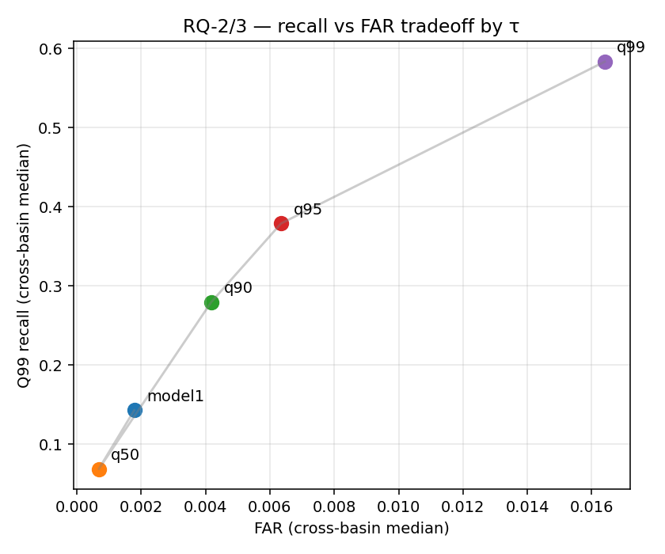
4.4 RQ-4: 유역 및 사건 유형 이질성
4.4a Model 1 NSE 기준 유역 계층(tier)
Model 1 NSE 기준으로 유역을 상위/중간/하위 계층(tier)으로 나누면, Model 1의 NSE 점수가 가장 낮은 하위 계층 유역에서 q99의 첨두 과소추정 완화 효과가 가장 크게 나타났다. 하위 계층에서는 q99의 α(과소추정 비율, 수식 6)가 0.00, δ(Q99 재현율, 수식 8)가 0.95까지 증가했지만 FAR도 0.0604로 가장 높았다. 이는 결정론적 예측이 가장 부정확한 유역일수록 상위 분위수의 상대적 개선 폭이 크지만, 동시에 오경보 위험도 높아진다는 비대칭 관계를 보여준다.
| Tier | q50 α | q99 α | q50 δ | q99 δ | q99 FAR |
|---|---|---|---|---|---|
| Top (NSE ≥ 0.50) | 0.74 | 0.22 | 0.02 | 0.39 | 0.0077 |
| Mid (−0.05 ≤ NSE < 0.50) | 0.68 | 0.00 | 0.07 | 0.62 | 0.0115 |
| Bottom (NSE < −0.05) | 0.46 | 0.00 | 0.26 | 0.95 | 0.0604 |
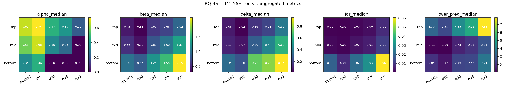
4.4b NOAA 사건 유형 이질성
NOAA 사건 유형 기준으로는 돌발 홍수(Flash Flood)가 가장 어려운 범주였다. 돌발 홍수에서는 q99에서도 α(과소추정 비율, 수식 6)가 0.42 남았고 β(±6시간 창 포착률, 수식 7)도 0.88에 머물렀다. 반면 일반 홍수(Flood) 사건에서는 q99 α가 0.06, β가 1.09로 개선되었다. 이는 시간 단위 강제력과 유역 응답 속도의 한계로 인해 빠른 상승을 보이는 돌발 홍수의 발생 시각 포착이 여전히 어렵다는 점을 보여준다. 돌발 홍수는 강수 신호가 유량 첨두로 이어지는 시간이 매우 짧아, 현재의 336시간 참조 기간 내에서도 충분한 선행 신호를 포착하지 못하기 때문으로 해석된다.
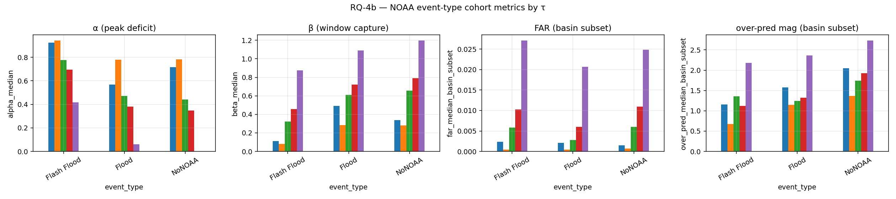
4.5 RQ-5: 보정, 예리도, 분위수 단조성
Model 2의 분위수 출력은 첨두 결정 산출값으로는 유용했지만, 명목 수준에 완전히 보정되지는 않았다. 전 시간 경험적 단측 피복률 Coverage(τ)(수식 10)은 모든 τ에서 명목 피복률보다 낮았다.
| 산출값 | 명목 τ | 경험적 피복률 Coverage(τ) | 보정 오차 CE(τ) |
|---|---|---|---|
| q50 | 0.50 | 0.339 | −0.161 |
| q90 | 0.90 | 0.506 | −0.394 |
| q95 | 0.95 | 0.638 | −0.312 |
| q99 | 0.99 | 0.787 | −0.203 |
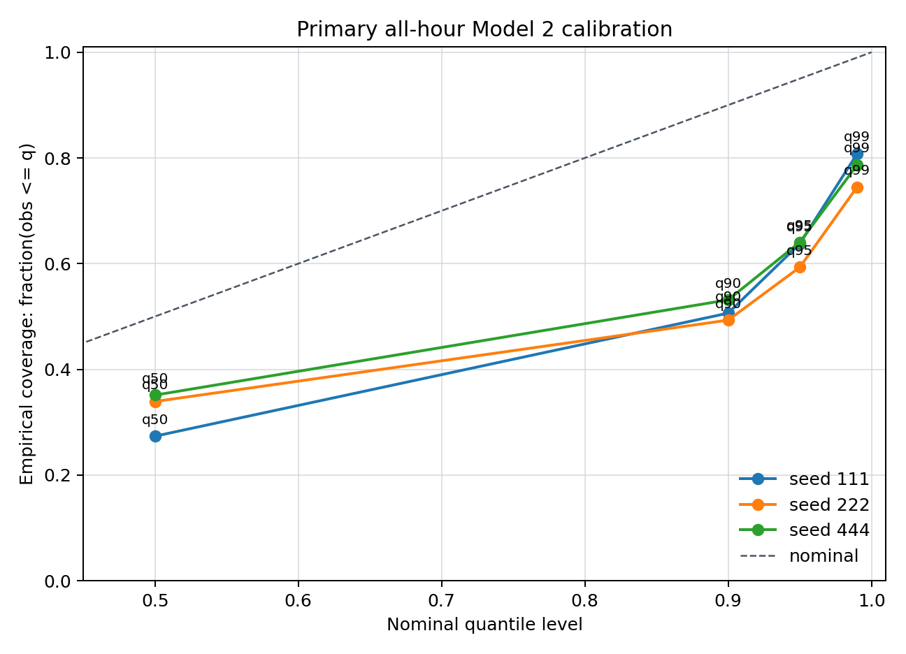
이처럼 모든 분위수에서 경험적 피복률이 명목값보다 낮다는 사실은, 모델이 체계적으로 분위수를 과소하게 추정하고 있음을 의미한다. 다시 말해, q90이라고 출력해도 실제 관측값이 그 아래에 머무는 비율은 명목 90%가 아닌 약 51%에 불과하다. 이러한 보정 부족은 Pinball 손실로 학습하더라도 분포 이동이 심한 조건에서는 자동으로 해소되지 않으며, 보정 사후 처리(recalibration) 또는 분위수 교차 페널티(QCP) 추가가 필요함을 시사한다.
Pinball 손실 관점에서는 상위 분위수가 고유량 결정 신호로 유용한 성능을 보였다. 전 시간 평균 Pinball 손실은 q50 4.656에서 q99 1.638로 감소하였고, Q99를 초과하는 대홍수 사건에서 q99의 적중률은 56.3%였다. 그러나 기후학적 기준선 대비 Pinball 기술 점수는 q99에서 −0.271로 음수였다. 이는 q99가 고유량 첨두 보호에는 도움이 되지만, 기후학적 예리도(sharpness) 관점에서는 손해가 있음을 의미한다. 즉 q99는 평균적인 유량 수준의 예측에서는 기후 평균보다 덜 정확하지만, 극한 홍수 발생 여부를 판단하는 결정 신호로서의 가치는 유지된다.
홍수 예측 상한선(q50/q90/q95/q99) 데이터를 전수 조사한 결과 분위수 역전(quantile crossing) 오류가 발생하지 않았다(단조성 검증 통과).
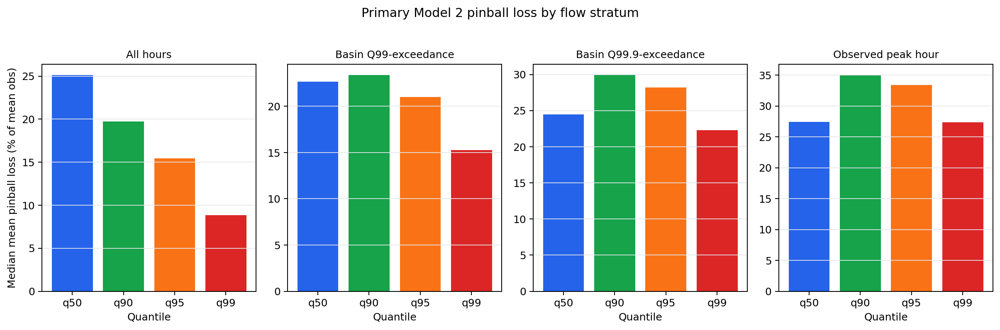
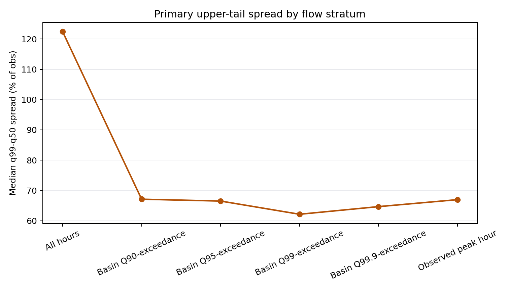
제 5장 논의
5.1 출력 설계가 첨두 과소추정에 미치는 영향
결과는 본 연구의 핵심 가설을 지지한다. 같은 기반망을 유지해도 헤드를 결정론적 점 추정값에서 분위수 출력으로 바꾸면 상위 꼬리 과소추정이 크게 감소한다. 특히 q99는 Q99 사건 범위에서 α(과소추정 비율, 수식 6)를 거의 0에 가깝게 낮추고(0.018), δ(Q99 임계값 재현율, 수식 8; 홍수 진행 위험 시간대 예측 적중률)를 0.583까지 끌어올렸다.
이 결과는 극한 첨두 문제를 해결하기 위해 항상 더 복잡한 기반망이나 물리 기반 핵심 모듈이 먼저 필요한 것은 아니라는 점을 시사한다. 출력 설계의 변경만으로도 의미 있는 개선이 가능하다.
단, 해석 시 중요한 한계를 인지해야 한다. Model 2는 분위수 헤드와 Pinball 손실 함수를 동시에 변경하였다. Pinball 손실은 비대칭 경사(gradient) 신호를 통해 기반망의 내부 표현 자체에도 영향을 줄 수 있으므로, 관측된 개선이 "출력 헤드 변경만의 효과"인지 "Pinball 손실의 학습 신호 변화 효과"인지를 현 실험 설계에서 완전히 분리하기 어렵다. 두 요소를 독립적으로 평가하려면 동일 기반망에 q50 단독 Pinball 손실을 적용한 분리 실험(ablation)이 필요하며, 이는 향후 연구 과제로 남긴다.
5.2 중앙 예측값과 상위 꼬리 출력의 역할 분리
q50은 중앙 수문곡선을 담당하고, q90/q95/q99는 점점 보수적인 결정 출력으로 읽어야 한다. q50이 고유량에서 과소 편향을 보이는 것은 편향된(skewed) 유량 분포에서 조건부 평균과 조건부 중앙값이 다르기 때문이며, 상위 꼬리 출력이 필요한 이유이기도 하다.
따라서 Model 2를 평가할 때 q50 하나만 Model 1과 비교하면 확률론적 헤드의 핵심 장점을 놓치게 된다. 올바른 비교 체계는 "q50(중앙 추정값) + q90/q95/q99(상위 꼬리 결정 기준)"을 다층 체계로 보는 것이다.
5.3 운영적 상충 관계
q99는 첨두 과소추정을 줄이지만 오탐지(false-positive) 비용도 증가시킨다. 이 결과는 q99를 "항상 최선의 예측"이라고 주장하기보다, 위험 허용도가 높은 상황에서 사용할 수 있는 보수적 경보 기준으로 해석해야 함을 의미한다.
실제 홍수 경보에서는 q90/q95/q99 중 어느 출력을 사용할지는 미포착(false negative) 홍수의 비용과 오경보(false alarm) 비용의 상대적 중요도에 따라 달라진다. 예를 들어, 댐 운영이나 긴급 대피 발령과 같이 미포착 홍수의 비용이 압도적으로 큰 경우에는 q99가 적합할 수 있지만, 잦은 오경보가 신뢰도 손상으로 이어지는 상황에서는 q90이나 q95가 더 균형 잡힌 선택일 수 있다.
5.4 한계 및 향후 연구
한계 0 — 출력 설계와 손실 함수의 결합 변경: Model 2는 분위수 헤드와 Pinball 손실을 동시에 변경하였다. 두 요소의 기여를 완전히 분리하는 분리 실험(ablation)을 수행하지 않았으므로, 관측된 첨두 과소추정 감소가 헤드 구조의 효과인지 Pinball 손실의 경사 신호 변화 효과인지를 현 실험에서 단정하기 어렵다. 이 한계는 5.1절 논의에서도 명시하였으며, 향후 분리 실험으로 검증이 필요하다.
한계 1 — 확률론적 보정 부족: q99의 경험적 피복률 Coverage(q99, 수식 10)가 0.787로 명목값 0.99에 미치지 못하므로, 완전한 보정을 주장할 수 없다. 분위수 교차 페널티(QCP), 분위수 재보정(recalibration), 또는 극단값 통계적 사후 처리를 통한 개선이 필요하다.
한계 2 — 하위 분위수 부재: 현재 분위수 집합은 q50/q90/q95/q99만 포함하므로 양방향 불확실성 평가(예측 구간, Winkler 점수)를 수행하지 않았다. 하위 분위수를 포함한 전체 구간 예측이 후속 연구에서 필요하다.
한계 3 — 돌발 홍수의 잔존 한계: 돌발 홍수 범주에서는 q99에서도 α = 0.42의 잔여 과소추정이 남았다. 이는 시간 단위 강제력, 유역 응답 속도, 수문 추적/시각 표현의 한계와 관련될 수 있다.
한계 4 — 단일 지역 검증: 현재 분석은 DRBC 85개 유역에 한정되므로, 산악 유역·건조 지역·대규모 유역 등 다른 지리적 조건에서의 일반화 가능성을 검증하지 않았다.
한계 5 — Model 2 과소추정의 단일 정의 부재: Model 2는 q50/q90/q95/q99 네 개의 분위수를 동시에 출력하므로, "모델이 얼마나 과소추정하는가"를 하나의 수치로 집약하는 방법이 현재로서는 정의되어 있지 않다. 각 분위수에 가중치를 부여해 단일 지표를 도출하는 방법도 이론적으로 가능하지만, 가중치 설정 기준이 자의적이 될 수 있다. 이 한계는 Model 1과 Model 2 간의 단순 비교를 어렵게 만들며, 분위수별 개별 해석이 필요하다.
한계 6 — 모델 선택 기준의 부재: Model 1(결정론적 단일 예측)과 Model 2(확률론적 분위수 예측) 중 어느 모델이 "더 낫다"는 판단은 경제성(Model 1의 단순성·계산 효율성)과 정확성(Model 2의 극한 첨두 포착 능력) 중 무엇을 우선시하느냐에 달려 있다. 두 기준을 동일 선상에서 비교하는 단일 척도가 없으므로, 운영 환경과 의사결정 목적에 따라 모델 선택 기준이 달라져야 한다. 이는 해석 기준의 명시가 중요함을 보여준다.
향후 연구 방향:
- 하위 분위수 포함 전체 구간 예측 및 양방향 보정 평가
- 분위수 교차 페널티(QCP) 손실, 분위수 재보정, 극한값 사후 처리 도입
- 돌발 홍수 시각 오차 완화: 더 높은 해상도 강제력 또는 수문 추적 보완
- 물리 기반 개념 핵심 모듈과의 혼합 구조 탐색(후속 확장)
- 비용-편익 정량화: 오경보와 미포착 사건의 사회경제적 비용을 통한 최적 τ 선택 가이드라인
제 6장 결론
본 연구는 CAMELSH 시간 단위 자료집합과 DRBC 지역 검증 보류 조건에서 결정론적 다중 유역 LSTM(Model 1)과 확률론적 분위수 LSTM(Model 2)을 비교하였다. 실험 설계는 기반망, 입력, 유역 분할, 시간 분할, 난수 시드를 고정하고 출력 헤드와 손실 함수만 바꾼 공정한 비교 구조를 사용하였다.
결과적으로 네 가지 핵심 결론을 도출하였다.
- 다층 결정 산출값 체계의 유용성: Model 2 q50~q99 불확실성 밴드는 "더 정확한 단일 예측"이 아니라, 사용자가 위험 회피 선호도에 따라 τ를 선택할 수 있는 의사결정 지원 도구로 기능한다. q50은 중앙 예측 성능을 유지하고(NSE +0.149, 85개 DRBC 유역 기준), q99는 Q99 사건(82개 유역, 926개 사건)에서 첨두 과소추정 비율 α를 0.018 수준까지 줄이며 Q99 재현율 δ를 0.583까지 향상시킨다. 이는 동일한 기반망 위에서 출력 설계만 바꾸어도 홍수 첨두 보호 성능을 의미 있게 높일 수 있음을 실증한다.
- 상충 관계의 명시성: τ 증가에 따라 첨두 과소추정 비율은 감소하지만, 오경보율은 23배 증가한다(q50 0.0007 → q99 0.0164). 과소 간격 감소(q50 23.7 → q99 0.87 cms)와 과대 간격 등장(q99에서 3.58 cms)이 동시에 발생하는 비대칭 상충 구조는 "τ가 클수록 항상 좋다"는 단순한 주장을 부정하며, 운영 환경에 따라 적절한 τ를 선택해야 함을 의미한다.
- 극한 사건의 완전 포착 불가능성: 전체 사건 집계 기준으로 Q99 사건 첨두의 약 43%, NOAA 확인 홍수 첨두의 약 57%가 q99를 초과한다. 즉, 현재 모델의 가장 보수적인 출력인 q99조차 상당수 극한 홍수 첨두를 과소평가한다. 단일 또는 다층 신경망 기반 예측만으로는 모든 극한 첨두를 완벽히 보호할 수 없으며, 추가적 물리 기반 제약 또는 사후 조정이 필요할 수 있다.
- 출력 설계의 중요성: 동일한 LSTM 기반망에 확률론적 분위수 헤드만 추가해도 홍수 첨두 보호 성능을 의미 있게 개선할 수 있다. 극한 첨두 문제를 해결하기 위해 항상 더 복잡한 기반망이나 물리 기반 핵심 모듈이 먼저 필요하지 않을 수 있으며, 출력 설계와 손실 함수의 변경이 하나의 효과적인 첫 번째 접근 방식이 될 수 있다.
참고문헌
- Addor, N., Newman, A. J., Mizukami, N., and Clark, M. P. (2017). The CAMELS data set: catchment attributes and meteorology for large-sample studies. Hydrology and Earth System Sciences, 21, 5293–5313.
- Gupta, H. V., Kling, H., Yilmaz, K. K., and Martinez, G. F. (2009). Decomposition of the mean squared error and NSE performance criteria: Implications for improving hydrological modelling. Journal of Hydrology, 377(1–2), 80–91.
- Kling, H., Fuchs, M., and Paulin, M. (2012). Runoff conditions in the upper Danube basin under an ensemble of climate change scenarios. Journal of Hydrology, 424–425, 264–277.
- Koenker, R., and Bassett, G. (1978). Regression quantiles. Econometrica, 46(1), 33–50.
- Nash, J. E., and Sutcliffe, J. V. (1970). River flow forecasting through conceptual models part I — A discussion of principles. Journal of Hydrology, 10(3), 282–290.
- Frame, J. M., Kratzert, F., Klotz, D., et al. (2022). Deep learning rainfall-runoff predictions of extreme events. Hydrology and Earth System Sciences, 26, 3377–3392.
- Klotz, D., Kratzert, F., Gauch, M., et al. (2022). Uncertainty estimation with deep learning for rainfall-runoff modeling. Hydrology and Earth System Sciences, 26, 1673–1693.
- Knoben, W. J. M., Freer, J. E., and Woods, R. A. (2019). Inherent benchmark or not? Comparing Nash-Sutcliffe and Kling-Gupta efficiency scores. Hydrology and Earth System Sciences, 23, 4323–4331.
- Kratzert, F., Klotz, D., Brenner, C., Schulz, K., and Herrnegger, M. (2018). Rainfall-runoff modelling using Long Short-Term Memory networks. Hydrology and Earth System Sciences, 22, 6005–6022.
- Kratzert, F., Klotz, D., Shalev, G., et al. (2019). Towards learning universal, regional, and local hydrological behaviors via machine learning applied to large-sample datasets. Hydrology and Earth System Sciences, 23, 5089–5110.
- Kratzert, F., Klotz, D., Herrnegger, M., et al. (2019). Toward improved predictions in ungauged basins: exploiting the power of machine learning. Water Resources Research, 55, 11344–11354.
- Mizukami, N., Rakovec, O., Newman, A. J., et al. (2019). On the choice of calibration metrics for high-flow estimation using hydrologic models. Hydrology and Earth System Sciences, 23, 2601–2614.
- Tran, H., et al. (2025). CAMELSH: A large-sample hourly hydrometeorological dataset and attributes at watershed-scale for CONUS. Manuscript/preprint.